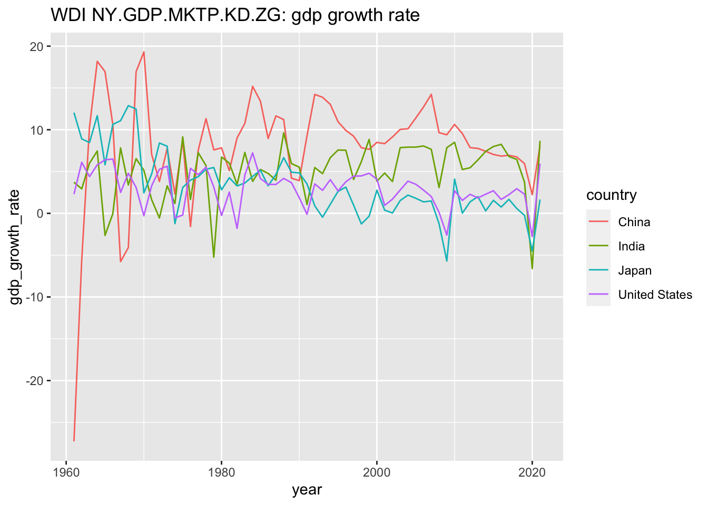
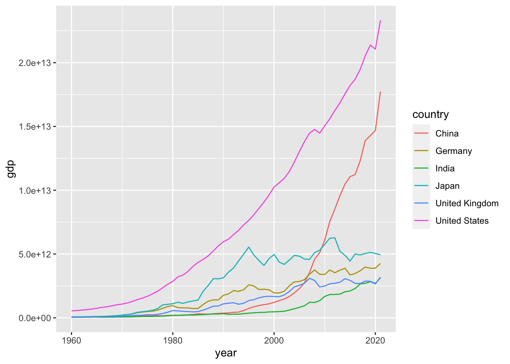
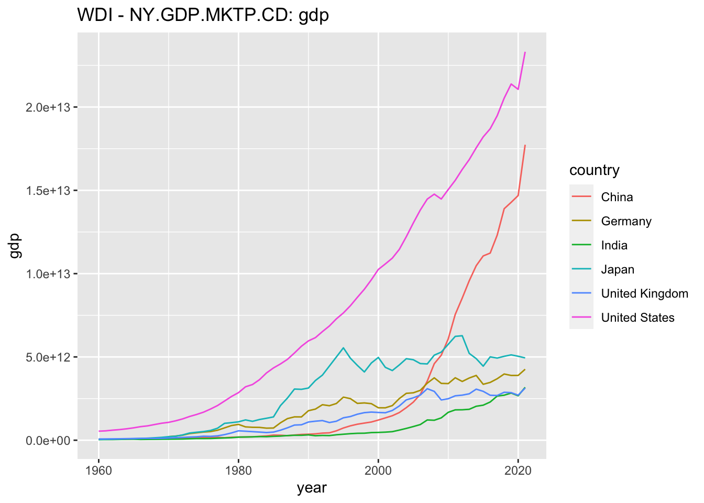

Chapter 24 World Bank
24.1 World Development Indicator (WDI)
パッケージ と tidyverse と WDI を使いますから、下のコードによって、ロードします。
library(tidyverse)
#> ── Attaching core tidyverse packages ──── tidyverse 2.0.0 ──
#> ✔ dplyr 1.1.2 ✔ readr 2.1.4
#> ✔ forcats 1.0.0 ✔ stringr 1.5.0
#> ✔ ggplot2 3.4.2 ✔ tibble 3.2.1
#> ✔ lubridate 1.9.2 ✔ tidyr 1.3.0
#> ✔ purrr 1.0.1
#> ── Conflicts ────────────────────── tidyverse_conflicts() ──
#> ✖ dplyr::filter() masks stats::filter()
#> ✖ dplyr::lag() masks stats::lag()
#> ℹ Use the conflicted package (<http://conflicted.r-lib.org/>) to force all conflicts to become errors
library(WDI)まず、三つの例を見てみましょう。なにをしているかわかりますか。考えて見てください。
WDI(country = "all", indicator = c(gdp = "NY.GDP.MKTP.CD"),
extra=TRUE) %>% drop_na(gdp) %>%
filter(year==max(year), income !="Aggregates") %>%
drop_na(region) %>% arrange(desc(gdp))#> Rows: 16492 Columns: 13
#> ── Column specification ────────────────────────────────────
#> Delimiter: ","
#> chr (7): country, iso2c, iso3c, region, capital, income...
#> dbl (4): year, gdp, longitude, latitude
#> lgl (1): status
#> date (1): lastupdated
#>
#> ℹ Use `spec()` to retrieve the full column specification for this data.
#> ℹ Specify the column types or set `show_col_types = FALSE` to quiet this message.
#> # A tibble: 196 × 13
#> country iso2c iso3c year gdp status lastupdated
#> <chr> <chr> <chr> <dbl> <dbl> <lgl> <date>
#> 1 United Stat… US USA 2021 2.33e13 NA 2022-12-22
#> 2 China CN CHN 2021 1.77e13 NA 2022-12-22
#> 3 Japan JP JPN 2021 4.94e12 NA 2022-12-22
#> 4 Germany DE DEU 2021 4.26e12 NA 2022-12-22
#> 5 India IN IND 2021 3.18e12 NA 2022-12-22
#> 6 United King… GB GBR 2021 3.13e12 NA 2022-12-22
#> 7 France FR FRA 2021 2.96e12 NA 2022-12-22
#> 8 Italy IT ITA 2021 2.11e12 NA 2022-12-22
#> 9 Canada CA CAN 2021 1.99e12 NA 2022-12-22
#> 10 Korea, Rep. KR KOR 2021 1.81e12 NA 2022-12-22
#> # ℹ 186 more rows
#> # ℹ 6 more variables: region <chr>, capital <chr>,
#> # longitude <dbl>, latitude <dbl>, income <chr>,
#> # lending <chr>WDI(country = c("CN","GB","JP","IN","US","DE"), indicator = c(gdp = "NY.GDP.MKTP.CD"), extra=TRUE) %>% drop_na(gdp) %>%
ggplot(aes(year, gdp, col = country)) + geom_line() +
labs(title = "WDI NY.GDP.MKTP.CD: gdp")#> Rows: 372 Columns: 13
#> ── Column specification ────────────────────────────────────
#> Delimiter: ","
#> chr (7): country, iso2c, iso3c, region, capital, income...
#> dbl (4): year, gdp, longitude, latitude
#> lgl (1): status
#> date (1): lastupdated
#>
#> ℹ Use `spec()` to retrieve the full column specification for this data.
#> ℹ Specify the column types or set `show_col_types = FALSE` to quiet this message.
WDI(country = c("CN","IN","JP","US"),
indicator = c(gdp_growth_rate = "NY.GDP.MKTP.KD.ZG"), extra=TRUE) %>%
drop_na(gdp_growth_rate) %>%
ggplot(aes(year, gdp_growth_rate, col = country)) + geom_line() +
labs(title = paste("WDI NY.GDP.MKTP.KD.ZG: gdp growth rate"))#> Rows: 248 Columns: 13
#> ── Column specification ────────────────────────────────────
#> Delimiter: ","
#> chr (7): country, iso2c, iso3c, region, capital, income...
#> dbl (4): year, gdp_growth_rate, longitude, latitude
#> lgl (1): status
#> date (1): lastupdated
#>
#> ℹ Use `spec()` to retrieve the full column specification for this data.
#> ℹ Specify the column types or set `show_col_types = FALSE` to quiet this message.
まず、世界の国々の、GDP（gross domestic product 国内総生産）のデータを、取得して、2021年の GDP を大きな順に並べています。
値は、たとえば、\(2.331508e+13\) のように書かれていますが、これは、科学的記法と呼ばれるもので、\(2.331508 \times 10^{13}\) を意味しています。約23兆ドルです。
次に、3兆ドル以上の、６カ国を選択し、その、iso2c と呼ばれるコードを使って、それらの国のデータをもう一度取得し、年次変化をあらわすグラフを描いています。
さらにその中から、４カ国を選んで、今度は、GDP の年次変化率を描いています。単位は、パーセントです。
これは、ひとつの例ですが、ここで使われているのが、WDI World Development Indicator というもので、世界銀行が、いくつかの指標を定めて、編纂しているものです。
24.1.1 指標 Indicators (WDI)
上の例では、次の二つの指標のコード Indicator Code (WDI Code) が使われました。
- NY.GDP.MKTP.CD: GDP (current US$)
- NY.GDP.MKTP.KD.ZG: GDP growth (annual %)
24.1.2 指標 WDI (World Development Indicators)
The World Development Indicators is a compilation of relevant, high-quality, and internationally comparable statistics about global development and the fight against poverty. The database contains 1,400 time series indicators for 217 economies and more than 40 country groups, with data for many indicators going back more than 50 years.
WDIは、世界の開発状況と、貧困との戦いに関する、適切で上質、かつ、国際的に比較可能な時系列の統計データを編纂したものです。このデータベースは、217の経済と40以上の国グループについて1,400の時系列指標を含み、指標のデータの多くは50年以上前に遡ることができます。
- 世界銀行（World Bank）: https://www.worldbank.org
- World Bank Open Data: https://data.worldbank.org
- Country / Indicator > Featured & All > Details
- World Development Indicators (WDI) :
- Themes: Poverty and Inequality, People, Environment, Economy, States and Markets, Global Links
- Open Data & DataBank: Explore data, Query database
24.1.3 指標 のコード、WDI code を探してみよう
いくつかの探し方があります。まず、ここでは、World Bank のサイトから探す方法を説明しましょう。
ふた通りあります。
World Bank Open Data にいくと、表題の下の検索窓の下に、 Country / Indicator とありますから、Indicator を選択します。すると、そこに、項目のリストが、Featured と All という二つのタブに分かれて出ています。かなり膨大です。それを選択すると、その項目のサイトに行きます。それが、指標のサイトです。図などの、右上に、Details とありますから、それを選択すると、その中に、Indicator が書かれています。 実は、指標のサイトのアドレス（URL）を見ると、そこにも、この Indicator が書かれていることがわかります。
World Development Indicators (WDI) にいくと、下のようなテーマに分かれています。
Themes: Poverty and Inequality, People, Environment, Economy, States and Markets, Global Links
その中から、選択して、スクロールすると、そこに、指標が書かれています。
Indicator, Code, Time coverage, Region coverage, Get data
とあり、Code が、指標のコードです。実は、すべての年や、すべての地域のデータが揃っているわけではないので、この情報を見ておくことはとても重要です。ほとんど、データがない場合もあります。
一番右端の Get data からは、CSV や、データバンク（Data Bank）へのリンクがあります。
それぞれの方法で、上で使った、二つの指標およびそのコードは見つかりましたか。
1 の方法の途中に出てきた、検索窓から検索することも可能です。
24.1.4 指標 WDIの例
このあとの、例で使う指標を書いておきます。
- NY.GDP.MKTP.CD: GDP (current US$)
- NY.GDP.DEFL.KD.ZG: Inflation, GDP deflator (annual %)
- SL.UEM.TOTL.NE.ZS: Unemployment, total (% of total labor force) (national estimate)
- CPTOTNSXN: CPI Price, nominal
- SL.TLF.CACT.MA.NE.ZS: Labor force participation rate, male (% of male population ages 15+) (national estimate)
- SL.TLF.CACT.FE.NE.ZS: Labor force participation rate, female (% of male population ages 15+) (national estimate)
24.1.5 練習 1. - 調べてみたい WDI 指標とそのコード
いくつか、リストしてみましょう。
24.2 WDI パッケージ
WDI パッケージ の使い方を紹介します。
WDI パッケージで、データをダウンロードしたり、探したり、詳細情報を得たりできます。
24.2.1 指標 WDI 検索
まず、検索です。上で、サイトから調べる方法を紹介しましたが、WDI パッケージの、WDIsearch でも探すことができます。詳細は、右下の窓枠の Help タブの検索窓に、WDIsearch といれて調べて見てください。ここでは、二種類の検索方法を紹介します。
24.2.1.1 検索例 1（WDI名）
WDI 名に、ある文字列が含まれているものを検索します。検索文字列は、大文字・小文字は関係ありません。
WDIsearch(string = "gdp", field = "name", short = TRUE, cache = NULL) %>%
as_tibble()
#> # A tibble: 540 × 2
#> indicator name
#> <chr> <chr>
#> 1 5.51.01.10.gdp "Per capita GDP growth"
#> 2 6.0.GDP_current "GDP (current $)"
#> 3 6.0.GDP_growth "GDP growth (annual %)"
#> 4 6.0.GDP_usd "GDP (constant 2005 $)"
#> 5 6.0.GDPpc_constant "GDP per capita, PPP (constant 2011…
#> 6 BG.GSR.NFSV.GD.ZS "Trade in services (% of GDP)"
#> 7 BG.KAC.FNEI.GD.PP.ZS "Gross private capital flows (% of …
#> 8 BG.KAC.FNEI.GD.ZS "Gross private capital flows (% of …
#> 9 BG.KLT.DINV.GD.PP.ZS "Gross foreign direct investment (%…
#> 10 BG.KLT.DINV.GD.ZS "Gross foreign direct investment (%…
#> # ℹ 530 more rowsなんと、500件以上出てきました。Indicator（指標コード）と、Name（指標名）が列挙されます。すべてに、GDP という文字列が入っていることを確認できると思います。
24.2.1.2 検索例 2（WDI）
Indicator（指標コード）から、Name（指標名）を検索します。
WDIsearch(string = "NY.GDP.MKTP.CD", field = "indicator", short = TRUE, cache = NULL)
#> indicator
#> 11410 NY.GDP.MKTP.CD
#> 11411 NY.GDP.MKTP.CD.XD
#> name
#> 11410 GDP (current US$)
#> 11411 GDP deflator, index (2000=100; US$ series)二件出てきました。
24.2.1.3 練習 2. - 検索（short）
名前で検索（“” の間に、（なるべく簡単な）検索文字列を入れてください。）
Indicator で検索（“” の間に、調べたい indicator を入れてください。）
24.2.1.4 詳しい情報を得るには
上では、Indicator（指標コード）と、Name（指標名）だけでしたが、Description（説明） なども得ることができます。
それには、short = FALSE とします。
一回一回、World Bank にアクセスして調べるのは、時間もかかりますから、Indicator と、名前などの情報をもったファイルを手元に持っておくことにします。それには、次のようにします。
これは、series と、country の二つのデータ・フレームからなっているリストです。
右上の窓枠（pane）から、wdi_cache を探して、中身を見てみましょう。三角印や、右から二番目の巻物のようなアイコンをクリックすると中身が見えます。
series には、すべての指標がリストされ、その情報が書かれています。
また、country には、それぞれについて、さまざまな情報が書かれています。これは、とても、たいせつな情報です。国名と、iso2c, iso3c のようなコードもありますし、地域（region）や、その国が、どの income level（収入の階級）に入るかも書かれています。また、国だけではなく、地域など、グループの名称も含まれています。
今後、さまざまに利用していきたいと思います。
24.2.1.5 検索例 3（WDI名）
short = FALSE として、検索してみましょう。文字列が入っている、指標名を検索します。
WDIsearch(string = "CPI Price", field = "name", short = FALSE, cache = wdi_cache)
#> indicator
#> 2586 CPTOTNSXN
#> 2587 CPTOTSAXMZGY
#> 2588 CPTOTSAXN
#> 2589 CPTOTSAXNZGY
#> name
#> 2586 CPI Price, nominal
#> 2587 CPI Price, % y-o-y, median weighted, seas. adj.
#> 2588 CPI Price, nominal, seas. adj.
#> 2589 CPI Price, % y-o-y, nominal, seas. adj.
#> description
#> 2586 The consumer price index reflects the change in prices for the average consumer of a constant basket of consumer goods. Data is not seasonally adjusted.
#> 2587 Median inflation rate calculated for geographical aggregates (regions, world, etc) of the annual percent change of the CPI. Data is seasonally adjusted.
#> 2588 The consumer price index reflects the change in prices for the average consumer of a constant basket of consumer goods. Data is in nominal terms and seasonally adjusted.
#> 2589 The consumer price index reflects the change in prices for the average consumer of a constant basket of consumer goods. Data is in nominal percentage terms, measured on a year-on-year basis, and seasonally adjusted.
#> sourceDatabase
#> 2586 Global Economic Monitor
#> 2587 Global Economic Monitor
#> 2588 Global Economic Monitor
#> 2589 Global Economic Monitor
#> sourceOrganization
#> 2586 World Bank staff calculations based on Datastream data.
#> 2587 World Bank staff calculations based on Datastream data.
#> 2588 World Bank staff calculations based on Datastream data.
#> 2589 World Bank staff calculations based on Datastream data.- CPTOTNSXN: CPI Price, nominal
- The consumer price index reflects the change in prices for the average consumer of a constant basket of consumer goods. Data is not seasonally adjusted.
24.2.1.6 検索例 4（WDI）
指標コードから、詳細情報を得ます。
WDIsearch(string = "NY.GDP.MKTP.KD.ZG", field = "indicator", short = FALSE, cache = wdi_cache)
#> indicator name
#> 12114 NY.GDP.MKTP.KD.ZG GDP growth (annual %)
#> description
#> 12114 Annual percentage growth rate of GDP at market prices based on constant local currency. Aggregates are based on constant 2015 prices, expressed in U.S. dollars. GDP is the sum of gross value added by all resident producers in the economy plus any product taxes and minus any subsidies not included in the value of the products. It is calculated without making deductions for depreciation of fabricated assets or for depletion and degradation of natural resources.
#> sourceDatabase
#> 12114 World Development Indicators
#> sourceOrganization
#> 12114 World Bank national accounts data, and OECD National Accounts data files.24.2.2 指標 WDI データのダウンロード
Indicator が決まったら、ダウンロードします。右下の窓枠の Help タブの検索枠に、WDI と入れて確認しましょう。
WDI(
country = "all",
indicator = "NY.GDP.PCAP.KD",
start = 1960,
end = NULL,
extra = FALSE,
cache = NULL,
latest = NULL,
language = "en"
)上が基本的な用法ですが、start 以下は、Default（初期値）が書かれていますから、たいせつなのは、最初の二つ、country と、indicator です。
24.2.2.1 ダウンロード例 1-1
country は、初期値も、“all” となっていますから、最も簡単なのは、indicator に、指標コードを入れることです。引用符を忘れずに。
#> Rows: 16492 Columns: 5
#> ── Column specification ────────────────────────────────────
#> Delimiter: ","
#> chr (3): country, iso2c, iso3c
#> dbl (2): year, NY.GDP.MKTP.CD
#>
#> ℹ Use `spec()` to retrieve the full column specification for this data.
#> ℹ Specify the column types or set `show_col_types = FALSE` to quiet this message.
#> # A tibble: 16,492 × 5
#> country iso2c iso3c year NY.GDP.MKTP.CD
#> <chr> <chr> <chr> <dbl> <dbl>
#> 1 Africa Eastern and Sout… ZH AFE 2021 1.08e12
#> 2 Africa Eastern and Sout… ZH AFE 2020 9.27e11
#> 3 Africa Eastern and Sout… ZH AFE 2019 1.00e12
#> 4 Africa Eastern and Sout… ZH AFE 2018 1.01e12
#> 5 Africa Eastern and Sout… ZH AFE 2017 1.02e12
#> 6 Africa Eastern and Sout… ZH AFE 2016 8.83e11
#> 7 Africa Eastern and Sout… ZH AFE 2015 9.25e11
#> 8 Africa Eastern and Sout… ZH AFE 2014 1.00e12
#> 9 Africa Eastern and Sout… ZH AFE 2013 9.83e11
#> 10 Africa Eastern and Sout… ZH AFE 2012 9.73e11
#> # ℹ 16,482 more rowsこれでも良いのですが、利用するには、指標コードではわかりにくいので、それを簡単な名前に置き換えて、データを読み込むこができます。
24.2.2.2 ダウンロード例 1-2
#> Rows: 16492 Columns: 5
#> ── Column specification ────────────────────────────────────
#> Delimiter: ","
#> chr (3): country, iso2c, iso3c
#> dbl (2): year, gdp
#>
#> ℹ Use `spec()` to retrieve the full column specification for this data.
#> ℹ Specify the column types or set `show_col_types = FALSE` to quiet this message.
#> # A tibble: 16,492 × 5
#> country iso2c iso3c year gdp
#> <chr> <chr> <chr> <dbl> <dbl>
#> 1 Africa Eastern and Southern ZH AFE 2021 1.08e12
#> 2 Africa Eastern and Southern ZH AFE 2020 9.27e11
#> 3 Africa Eastern and Southern ZH AFE 2019 1.00e12
#> 4 Africa Eastern and Southern ZH AFE 2018 1.01e12
#> 5 Africa Eastern and Southern ZH AFE 2017 1.02e12
#> 6 Africa Eastern and Southern ZH AFE 2016 8.83e11
#> 7 Africa Eastern and Southern ZH AFE 2015 9.25e11
#> 8 Africa Eastern and Southern ZH AFE 2014 1.00e12
#> 9 Africa Eastern and Southern ZH AFE 2013 9.83e11
#> 10 Africa Eastern and Southern ZH AFE 2012 9.73e11
#> # ℹ 16,482 more rows24.2.2.3 ダウンロード例 1-3
今度は、extra = TRUE として、読み込みましょう。先ほど、読み込んである、wdi_cache を使います。
df_gdp3 <- WDI(country = "all", indicator = c(gdp = "NY.GDP.MKTP.CD"),
extra=TRUE, cache=wdi_cache)
df_gdp3#> Rows: 16492 Columns: 13
#> ── Column specification ────────────────────────────────────
#> Delimiter: ","
#> chr (7): country, iso2c, iso3c, region, capital, income...
#> dbl (4): year, gdp, longitude, latitude
#> lgl (1): status
#> date (1): lastupdated
#>
#> ℹ Use `spec()` to retrieve the full column specification for this data.
#> ℹ Specify the column types or set `show_col_types = FALSE` to quiet this message.
#> # A tibble: 16,492 × 13
#> country iso2c iso3c year gdp status lastupdated
#> <chr> <chr> <chr> <dbl> <dbl> <lgl> <date>
#> 1 Afghanistan AF AFG 2021 1.48e10 NA 2022-12-22
#> 2 Afghanistan AF AFG 2020 2.01e10 NA 2022-12-22
#> 3 Afghanistan AF AFG 2019 1.89e10 NA 2022-12-22
#> 4 Afghanistan AF AFG 2018 1.84e10 NA 2022-12-22
#> 5 Afghanistan AF AFG 2017 1.89e10 NA 2022-12-22
#> 6 Afghanistan AF AFG 2016 1.80e10 NA 2022-12-22
#> 7 Afghanistan AF AFG 2015 2.00e10 NA 2022-12-22
#> 8 Afghanistan AF AFG 2014 2.06e10 NA 2022-12-22
#> 9 Afghanistan AF AFG 2013 2.06e10 NA 2022-12-22
#> 10 Afghanistan AF AFG 2012 2.02e10 NA 2022-12-22
#> # ℹ 16,482 more rows
#> # ℹ 6 more variables: region <chr>, capital <chr>,
#> # longitude <dbl>, latitude <dbl>, income <chr>,
#> # lending <chr>右上の三角印を使って、どのような詳細情報が付加されたか見て見ましょう。どんなことがわかりますか。
24.2.2.4 ダウンロード例 1-4
国名を指定します。WDI では、iso2c コードを使って、国名を指定します。上で見たように、Envoronment から、wdi_cache を選択すると、国名と、iso2c コード両方を見ることができました。iso2c や、iso3c は、よく使われるので、web 検索でも簡単にみつけることができます。最初に紹介した例ですから、どの国かはわかりますね、
df_gdp4 <- WDI(country = c("CN","GB","JP","IN","US","DE"),
indicator = c(gdp = "NY.GDP.MKTP.CD"), extra=TRUE, cache=wdi_cache)
df_gdp4#> Rows: 372 Columns: 13
#> ── Column specification ────────────────────────────────────
#> Delimiter: ","
#> chr (7): country, iso2c, iso3c, region, capital, income...
#> dbl (4): year, gdp, longitude, latitude
#> lgl (1): status
#> date (1): lastupdated
#>
#> ℹ Use `spec()` to retrieve the full column specification for this data.
#> ℹ Specify the column types or set `show_col_types = FALSE` to quiet this message.
#> # A tibble: 372 × 13
#> country iso2c iso3c year gdp status lastupdated
#> <chr> <chr> <chr> <dbl> <dbl> <lgl> <date>
#> 1 China CN CHN 2021 1.77e13 NA 2022-12-22
#> 2 China CN CHN 2020 1.47e13 NA 2022-12-22
#> 3 China CN CHN 2019 1.43e13 NA 2022-12-22
#> 4 China CN CHN 2018 1.39e13 NA 2022-12-22
#> 5 China CN CHN 2017 1.23e13 NA 2022-12-22
#> 6 China CN CHN 2016 1.12e13 NA 2022-12-22
#> 7 China CN CHN 2015 1.11e13 NA 2022-12-22
#> 8 China CN CHN 2014 1.05e13 NA 2022-12-22
#> 9 China CN CHN 2013 9.57e12 NA 2022-12-22
#> 10 China CN CHN 2012 8.53e12 NA 2022-12-22
#> # ℹ 362 more rows
#> # ℹ 6 more variables: region <chr>, capital <chr>,
#> # longitude <dbl>, latitude <dbl>, income <chr>,
#> # lending <chr>24.2.2.5 ダウンロード例 2-1
二つの、指標コードを使って、同時に読み込むこともできます。そのときは、c() (combine) を使います。
- NY.GDP.DEFL.KD.ZG: Inflation, GDP deflator (annual %)
- CPTOTNSXN: CPI Price, nominal
df_gdp21 <- WDI(country = "all",
indicator = c(gdp_deflator = "NY.GDP.DEFL.KD.ZG",
cpi_price = "CPTOTNSXN"),
extra=TRUE, cache=wdi_cache)
df_gdp21#> Rows: 23972 Columns: 14
#> ── Column specification ────────────────────────────────────
#> Delimiter: ","
#> chr (7): country, iso2c, iso3c, region, capital, income...
#> dbl (5): year, gdp_deflator, cpi_price, longitude, lati...
#> lgl (1): status
#> date (1): lastupdated
#>
#> ℹ Use `spec()` to retrieve the full column specification for this data.
#> ℹ Specify the column types or set `show_col_types = FALSE` to quiet this message.
#> # A tibble: 23,972 × 14
#> country iso2c iso3c year status lastupdated gdp_deflator
#> <chr> <chr> <chr> <dbl> <lgl> <date> <dbl>
#> 1 Advanc… AME <NA> 1987 NA 2020-07-27 NA
#> 2 Advanc… AME <NA> 1988 NA 2020-07-27 NA
#> 3 Advanc… AME <NA> 1989 NA 2020-07-27 NA
#> 4 Advanc… AME <NA> 1990 NA 2020-07-27 NA
#> 5 Advanc… AME <NA> 1991 NA 2020-07-27 NA
#> 6 Advanc… AME <NA> 1992 NA 2020-07-27 NA
#> 7 Advanc… AME <NA> 1993 NA 2020-07-27 NA
#> 8 Advanc… AME <NA> 1994 NA 2020-07-27 NA
#> 9 Advanc… AME <NA> 1995 NA 2020-07-27 NA
#> 10 Advanc… AME <NA> 1996 NA 2020-07-27 NA
#> # ℹ 23,962 more rows
#> # ℹ 7 more variables: cpi_price <dbl>, region <chr>,
#> # capital <chr>, longitude <dbl>, latitude <dbl>,
#> # income <chr>, lending <chr>NA (not available) つまり、データがないものが多いことがわかります。もう少し、データをよく見て見ましょう。
str(df_gdp21)
#> spc_tbl_ [23,972 × 14] (S3: spec_tbl_df/tbl_df/tbl/data.frame)
#> $ country : chr [1:23972] "Advanced Economies" "Advanced Economies" "Advanced Economies" "Advanced Economies" ...
#> $ iso2c : chr [1:23972] "AME" "AME" "AME" "AME" ...
#> $ iso3c : chr [1:23972] NA NA NA NA ...
#> $ year : num [1:23972] 1987 1988 1989 1990 1991 ...
#> $ status : logi [1:23972] NA NA NA NA NA NA ...
#> $ lastupdated : Date[1:23972], format: "2020-07-27" ...
#> $ gdp_deflator: num [1:23972] NA NA NA NA NA NA NA NA NA NA ...
#> $ cpi_price : num [1:23972] 58.7 60.5 63 66 69.1 ...
#> $ region : chr [1:23972] NA NA NA NA ...
#> $ capital : chr [1:23972] NA NA NA NA ...
#> $ longitude : num [1:23972] NA NA NA NA NA NA NA NA NA NA ...
#> $ latitude : num [1:23972] NA NA NA NA NA NA NA NA NA NA ...
#> $ income : chr [1:23972] NA NA NA NA ...
#> $ lending : chr [1:23972] NA NA NA NA ...
#> - attr(*, "spec")=
#> .. cols(
#> .. country = col_character(),
#> .. iso2c = col_character(),
#> .. iso3c = col_character(),
#> .. year = col_double(),
#> .. status = col_logical(),
#> .. lastupdated = col_date(format = ""),
#> .. gdp_deflator = col_double(),
#> .. cpi_price = col_double(),
#> .. region = col_character(),
#> .. capital = col_character(),
#> .. longitude = col_double(),
#> .. latitude = col_double(),
#> .. income = col_character(),
#> .. lending = col_character()
#> .. )
#> - attr(*, "problems")=<externalptr>summary(df_gdp21)
#> country iso2c iso3c
#> Length:23972 Length:23972 Length:23972
#> Class :character Class :character Class :character
#> Mode :character Mode :character Mode :character
#>
#>
#>
#>
#> year status lastupdated
#> Min. :1960 Mode:logical Min. :2020-07-27
#> 1st Qu.:1982 NA's:23972 1st Qu.:2020-07-27
#> Median :1996 Median :2022-12-22
#> Mean :1995 Mean :2022-03-23
#> 3rd Qu.:2009 3rd Qu.:2022-12-22
#> Max. :2021 Max. :2022-12-22
#>
#> gdp_deflator cpi_price region
#> Min. : -98.704 Min. : 0.00 Length:23972
#> 1st Qu.: 2.317 1st Qu.: 55.95 Class :character
#> Median : 5.273 Median : 83.28 Mode :character
#> Mean : 25.308 Mean : 84.18
#> 3rd Qu.: 10.411 3rd Qu.:108.75
#> Max. :26765.858 Max. :551.25
#> NA's :11616 NA's :18410
#> capital longitude latitude
#> Length:23972 Min. :-175.22 Min. :-41.286
#> Class :character 1st Qu.: -15.18 1st Qu.: 4.174
#> Mode :character Median : 19.26 Median : 17.300
#> Mean : 19.14 Mean : 18.889
#> 3rd Qu.: 50.53 3rd Qu.: 40.050
#> Max. : 179.09 Max. : 64.184
#> NA's :10890 NA's :10890
#> income lending
#> Length:23972 Length:23972
#> Class :character Class :character
#> Mode :character Mode :character
#>
#>
#>
#> どんなことが分かりましたか。
右上の窓枠の、Environment でも df_gdp21 を見てみましょう。
24.3 可視化 Visualization
グラフ（Chart）を描いて視覚化します。ここでは、年ごとの変化をみる、折れ線グラフだけを描いて見ます。
24.3.1 グラフ 1
x = year, y = gdp の、x=, y= は省略してあります。col=country は、国ごとに、グループにして、色分けをします。col は、color としても colour としても、問題ありません。
`
df_gdp4 %>% ggplot(aes(year, gdp, col=country)) + geom_line()
#> Warning: Removed 10 rows containing missing values
#> (`geom_line()`).
Warning として、missing values があると出ています。どこかは、分かりませんが、図を書くときですから、y に対応する、gdp の値がないものと思われます。
24.3.2 グラフ 2
drop_na(gdp) で、gdp の値が、NA であるものを削除します。また、labs で、図にタイトルをつけます。
df_gdp4 %>% drop_na(gdp) %>%
ggplot(aes(year, gdp, col=country)) + geom_line() +
labs(title = "WDI - NY.GDP.MKTP.CD: gdp")
24.3.3 テンプレート Templates
下に、テンプレートをつけます。コピーして、指標コードや、略称、国などを、それぞれ置き換えて、試して見てください。少し、複雑な変形をしていますが、少しずつ説明します。
24.3.3.1 一つの国についての、一つの指標（WDI）と、その略称から、折線グラフを作成
Line Plot with one indicator with abbreviation and one country
chosen_indicator <- "SL.UEM.TOTL.NE.ZS"
short_name <- "unemployment"
chosen_country <- "United States"
WDI(country = "all", indicator = c(short_name = chosen_indicator), extra=TRUE, cache=wdi_cache) %>%
filter(country == chosen_country) %>%
ggplot(aes(year, short_name)) + geom_line() +
labs(title = paste("WDI ", chosen_indicator, ": ", short_name, " - ", chosen_country),
y = short_name)24.3.3.2 一つの国についての、一つの指標（WDI）から、折線グラフを作成
Line Plot with one indicator and one country
chosen_indicator <- "SL.UEM.TOTL.NE.ZS"
chosen_country <- "United States"
WDI(country = "all", indicator = c(chosen_indicator = chosen_indicator),
extra=TRUE, cache=wdi_cache) %>%
filter(country == chosen_country) %>%
ggplot(aes(year, chosen_indicator)) + geom_line() +
labs(title = paste("WDI ", chosen_indicator, " - ", chosen_country),
y = chosen_indicator)24.3.3.3 いくつかの国についての、一つの指標（WDI）と、その略称から、折線グラフを作成
Line Plot with one indicator with abbreviation and several countries
chosen_indicator <- "SL.UEM.TOTL.NE.ZS"
short_name <- "unemployment"
chosen_countries <- c("United States","United Kingdom", "Japan")
WDI(country = "all", indicator = c(short_name = chosen_indicator), extra=TRUE, cache=wdi_cache) %>% drop_na(short_name) %>%
filter(country %in% chosen_countries) %>%
ggplot(aes(year, short_name, col = country)) + geom_line() +
labs(title = paste("WDI ", chosen_indicator, ": ", short_name), y = short_name)24.3.3.4 一つの国についての、二つの指標（WDI）と、その略称から、折線グラフを作成
Line Plot with two indicators with abbreviation and one country
chosen_indicator_1 <- "NY.GDP.DEFL.KD.ZG"
short_name_1 <- "gdp_deflator"
chosen_indicator_2 <- "CPTOTSAXNZGY"
short_name_2 <- "cpi_price"
chosen_country <- "United States"
WDI(country = "all", indicator = c(short_name_1 = chosen_indicator_1, short_name_2 = chosen_indicator_2), extra=TRUE, cache=wdi_cache) %>%
filter(country == chosen_country) %>%
pivot_longer(c(short_name_1, short_name_2), names_to = "class", values_to = "value") %>% drop_na(value) %>%
ggplot(aes(year, value, col = class)) + geom_line() +
labs(title = paste("WDI ", chosen_indicator_1, ": ", short_name_1, "\n", chosen_indicator_2, ": ", short_name_2, " - ", chosen_country)) +
scale_color_manual(labels = c(short_name_1, short_name_2), values = scales::hue_pal()(2))chosen_indicator_1 <- "SL.TLF.CACT.MA.NE.ZS"
short_name_1 <- "male"
chosen_indicator_2 <- "SL.TLF.CACT.FE.NE.ZS"
short_name_2 <- "female"
chosen_country <- "United States"
WDI(country = "all", indicator = c(short_name_1 = chosen_indicator_1, short_name_2 = chosen_indicator_2), extra=TRUE, cache=wdi_cache) %>%
filter(country == chosen_country) %>%
pivot_longer(c(short_name_1, short_name_2), names_to = "class", values_to = "value") %>% drop_na(value) %>%
ggplot(aes(year, value, col = class)) + geom_line() +
labs(title = paste("WDI ", chosen_indicator_1, ": ", short_name_1, "\n", chosen_indicator_2, ": ", short_name_2, " - ", chosen_country)) +
scale_color_manual(labels = c(short_name_1, short_name_2), values = scales::hue_pal()(2))24.3.3.5 いくつかの国についての、二つの指標（WDI）と、その略称から、折線グラフを作成
Line Plot with two indicators with abbreviation and several countries
chosen_indicator_1 <- "NY.GDP.DEFL.KD.ZG"
short_name_1 <- "gdp_deflator"
chosen_indicator_2 <- "CPTOTSAXNZGY"
short_name_2 <- "cpi_price"
chosen_countries <- c("United States", "France", "Japan")
WDI(country = "all", indicator = c(short_name_1 = chosen_indicator_1, short_name_2 = chosen_indicator_2), extra=TRUE, cache=wdi_cache) %>%
filter(country %in% chosen_countries) %>%
pivot_longer(c(short_name_1, short_name_2), names_to = "class", values_to = "value") %>% drop_na(value) %>%
ggplot(aes(year, value, linetype = class, col = country)) + geom_line() +
labs(title = paste("WDI ", chosen_indicator_1, ": ", short_name_1, "\n", chosen_indicator_2, ": ", short_name_2)) +
scale_linetype_manual(labels = c(short_name_1, short_name_2), values = c("solid", "dashed"))chosen_indicator_1 <- "SL.TLF.CACT.MA.NE.ZS"
short_name_1 <- "male"
chosen_indicator_2 <- "SL.TLF.CACT.FE.NE.ZS"
short_name_2 <- "female"
chosen_countries <- c("United States", "France", "Japan")
WDI(country = "all", indicator = c(short_name_1 = chosen_indicator_1, short_name_2 = chosen_indicator_2), extra=TRUE, cache=wdi_cache) %>%
filter(country %in% chosen_countries) %>%
pivot_longer(c(short_name_1, short_name_2), names_to = "class", values_to = "value") %>% drop_na(value) %>%
ggplot(aes(year, value, linetype = class, col = country)) + geom_line() +
labs(title = paste("WDI ", chosen_indicator_1, ": ", short_name_1, "\n", chosen_indicator_2, ": ", short_name_2)) +
scale_linetype_manual(labels = c(short_name_1, short_name_2), values = c("solid", "dashed"))24.4 課題 Assignment
上のテンプレートをコピーして、下に貼り付け、指標 indicator と、略称 short_name と、いくつかの国名 chosen_countries を、入れ替えて、試してみてください。